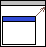

This TEXTBOOK is an assortment of HTML files to be read, watched and listened to in any Internet browser
like NETSCAPE NAVIGATOR, INTERNET EXPLORER, etc. 800 x 600 Hight Color or True Color or better is recommended.
Some would prefer to use FULL SCREEN VIEW (click
on 
You may shuffle through pages, return and repeat using the browser's controls like BACK and FORWARD , etc
When tired or in need of refreshment leave the program by EXITING the browser.
Also EXIT the browser's 2-nd copy if it has been opened to enable you to work in a wide window instead of the narrow one of the search engine and you do not need it anymore and thrive to return to the search engine. Or do not EXIT: no more than two copies would be opened anyway and into these, various HTML docs would be loaded...
FOR FASTER FUNCTIONING copy the entire <IMMLIVE> directory with all subdirectories to your hard drive if you own a really fast and large one or tolerate the unhurried screeching of your CD drive...
DON'T FORGET TO LEAVE BOOKMARKS! OR DO!
Although this program is extensively hyperlinked and as always with HTML files you can do anything you like in at least a dozen differeent ways we did not believe the more or less ordered way of digesting the Immunologic material should not be used - that's why we did not 100% hyperlinked the parts in order to incourage the reader starting from the beginning of each of the 5 major sections and then gradually chewing the material to the end... Of course you can use the glossary as second INDEX or the QUESTIONS for shortcutting to sertain topics, but after all, Immunology IS a free territory...
Ready to begin?! Click on  to view
the INDEX
to view
the INDEX